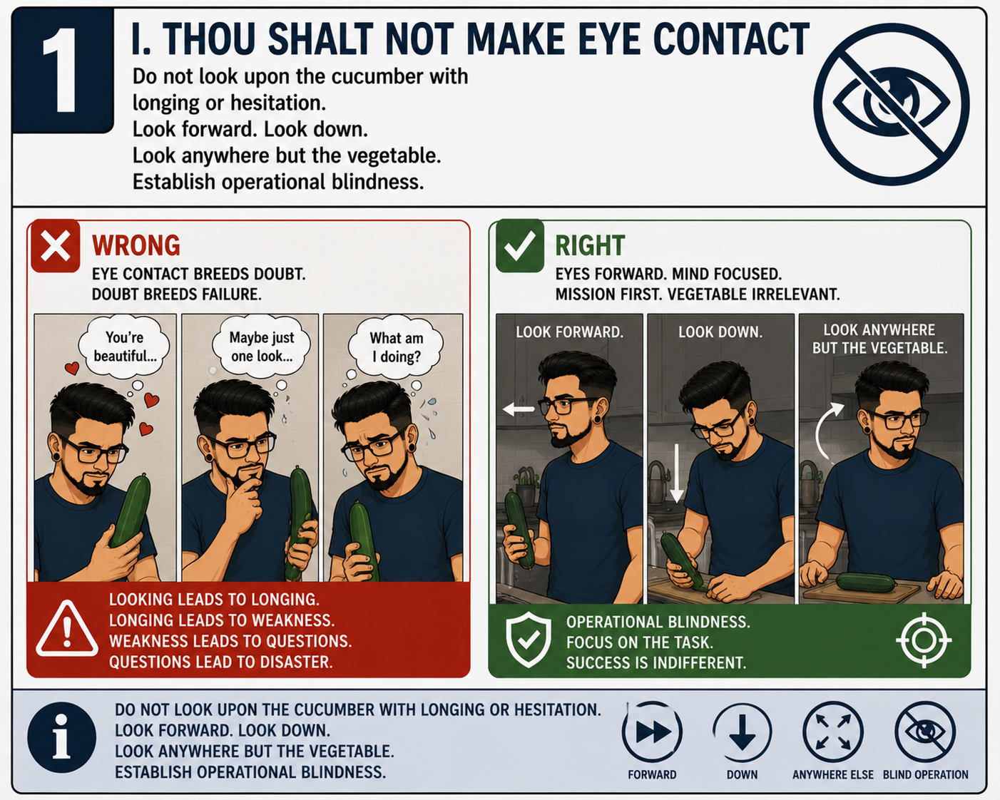
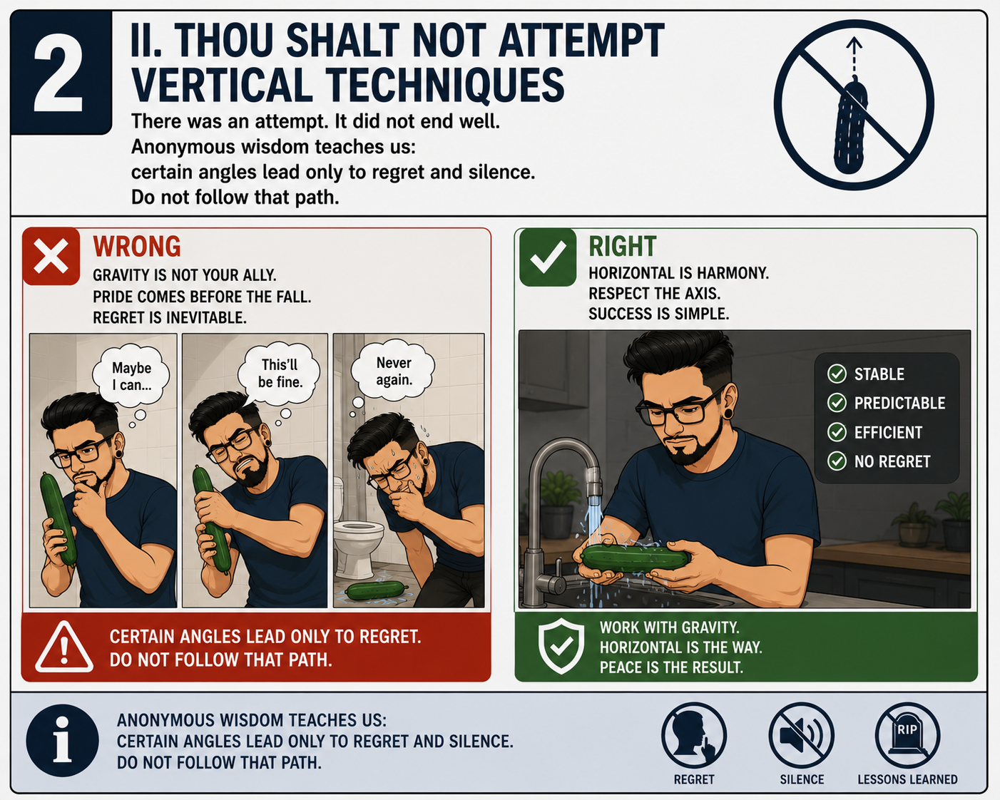
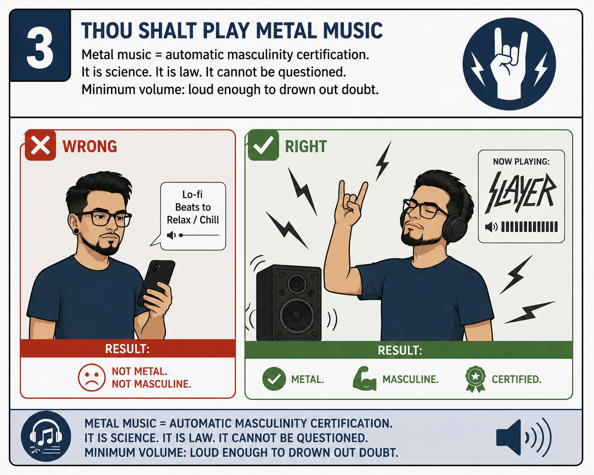
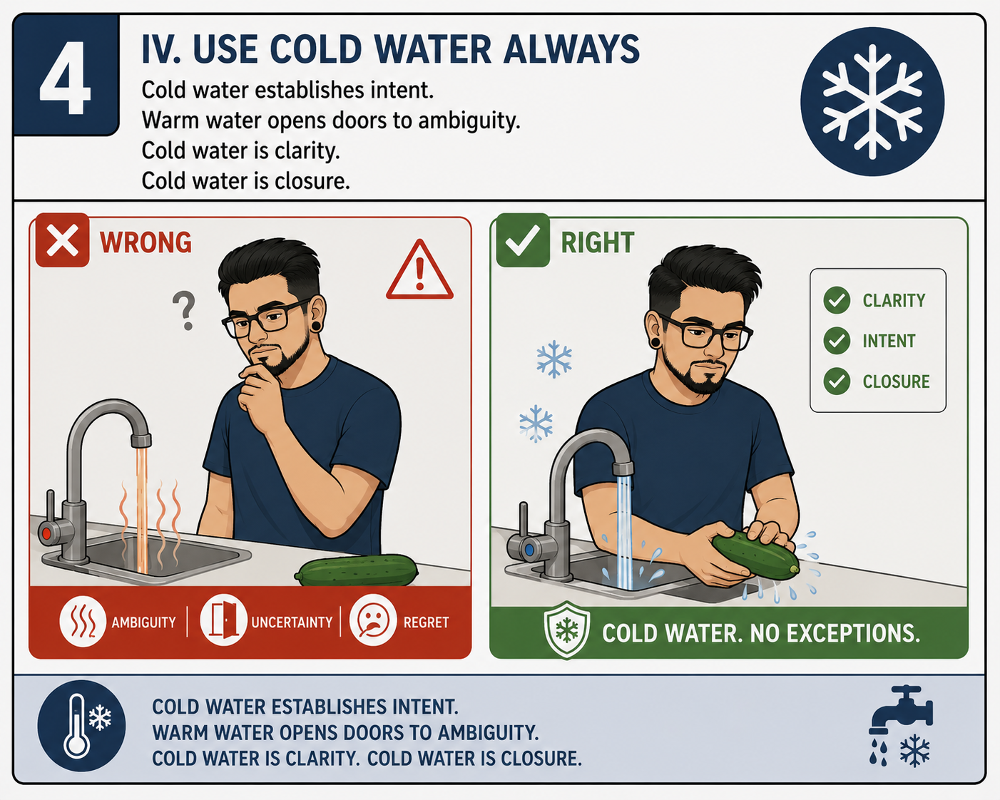
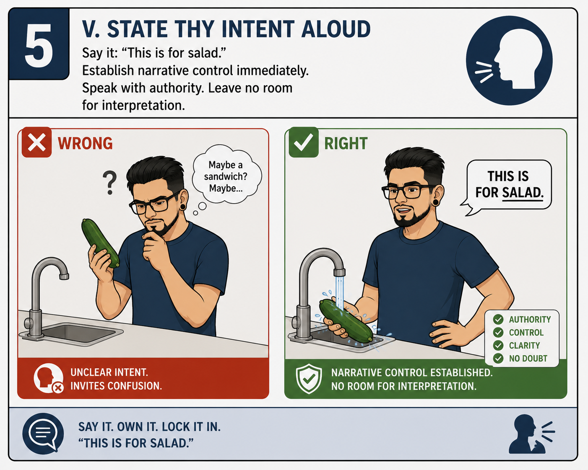
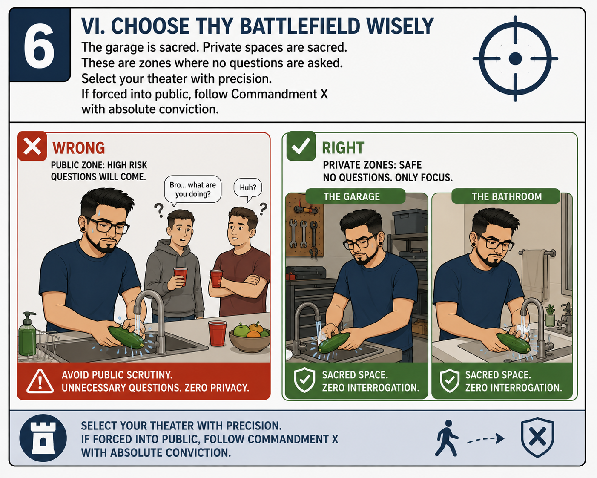
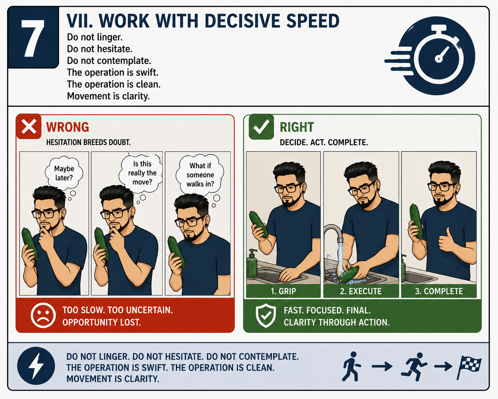
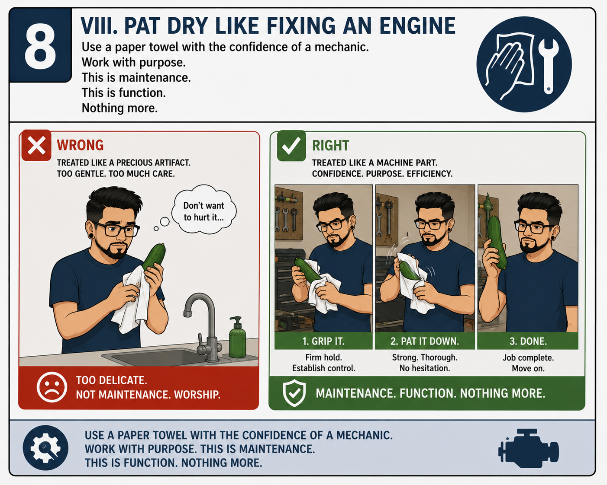
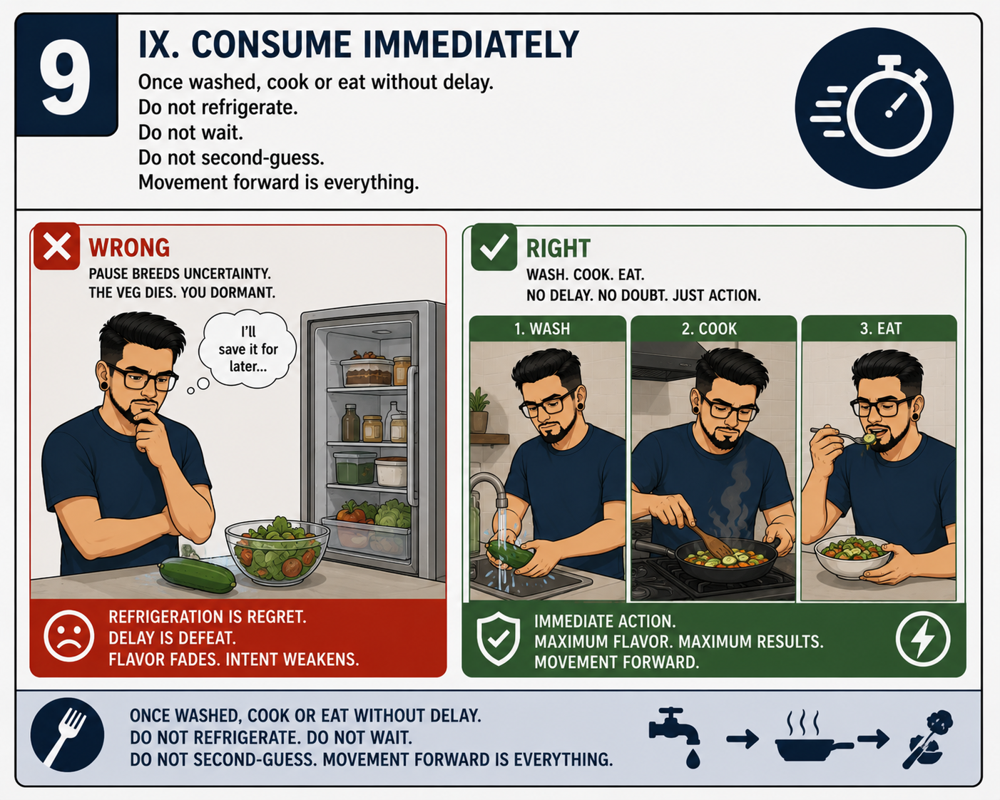
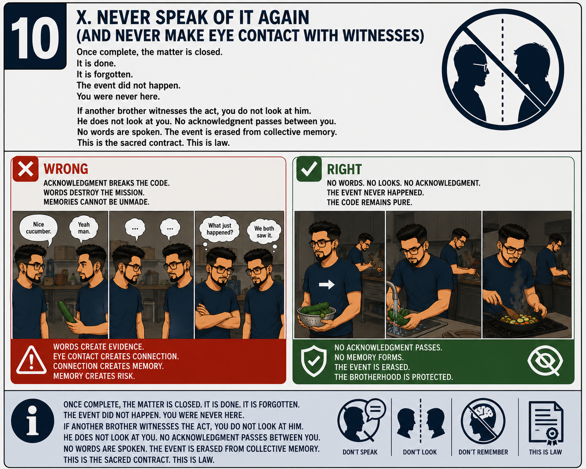

Official Almanac & Field Manual · Est. 2026
The foundational laws of brotherhood. Written in silence. Sealed in loyalty. Enforced by the averted gaze. Witnessed by the group chat.
v2.0 — Revised & ExpandedThe 10 Brommandments — Articles I through X of the Official Bro Code
The foundational article. Not a guideline. Not a preference. The immovable cornerstone upon which all brotherhood is built. Your bro was there before her. Your bro will be there after. Your bro showed up at 2am with no questions asked. Act accordingly. Always.
If your bro has a system — for cooking, for driving, for washing vegetables, for any activity conducted in the privacy of a garage — you do not question it. You do not comment on it. You observe, you nod, and if necessary, you were never there. This is respect. This is the Code.
Moving day. Breakup. 2am crisis. Questionable life decision that requires a witness. No questions asked. No details required. A bro shows up with a truck, a six-pack, or whatever is needed. The "why" is none of your business. Showing up is the whole job. Greg showed up. RJ showed up. This is what it means.
If your bro is telling a story and gets the details wrong, you do not correct him. You back him up. You add details. You make it legendary. The story gets better every time. What started as a Tuesday becomes a saga. This is generosity. This is brotherhood. This is the Code.
The statute of limitations on this rule: none. Not after six months. Not after six years. Not after they move to different cities, different countries, or different dimensions. The rule does not expire. It does not bend. It does not make exceptions. Not even if she's into metal.
No bro goes in alone. Whether it is a conversation, a party, a bad idea, or a kitchen situation requiring plausible deniability — your bro is stationed nearby, ready to create a distraction on demand. The wingman does not ask why. The wingman simply deploys. This is trust. This is tactics.
Screenshots are a violation of the Code. Reading group chat messages aloud to non-members is a violation. Summarizing, paraphrasing, or describing group chat events to outsiders is a violation. The group chat is classified. It is sacred. Certain documented incidents — including but not limited to The Cucumber Accord of 2026 — are sealed under this article permanently.
Whoever controls the aux controls reality. You may silently disagree with the musical selection. You may never express this disagreement aloud. You may not change the song without permission. You may not "suggest" something passive-aggressively. Exception: if Rafa is present, it's metal. It was always going to be metal. This is not up for discussion.
Brotherhood is not about preventing mistakes. It is about bearing witness to them, helping pick up the pieces, and signing an unspoken agreement that this will never leave the circle. Unless it becomes legendary. If it becomes legendary, it becomes a chapter in the Almanac. See: Guides, Chapter I.
If a bro confides something — a fear, a failure, a story involving produce, an incident requiring an inflatable evacuation ramp — that information is sealed. It does not leave the circle. It is not brought up at parties, on dates, or in court. The vault is permanent. The sacred contract has no expiration date. This is law. This is the Code.
Chapters & Field Guides
Field Guides & Protocols
Tactical documentation for situations the modern bro was never prepared for.
Bro Code · Chapter I · Field Guide
How to maintain your dignity while maintaining your vegetables — A definitive illustrated safety guide for the modern bro.
Mission Briefing
For too long, brothers have lived in the shadows, unable to enjoy their vegetables without fear of judgment. The Cucumber Protocol was born from years of struggle, research, and a singular truth: a man deserves to eat a cucumber in peace.
This is your safety card. Read it before you enter the kitchen. Memorize it. Live it. Never speak of it.
STEP-BY-STEP SAFETY PROCEDURE

The most common rookie mistake. The cucumber is not beautiful. It is not interesting. It is a vegetable. The guy in the WRONG panel is caught thinking "You're beautiful..." and "Maybe just one look..." — this is how careers end. LOOK FORWARD. LOOK DOWN. LOOK ANYWHERE BUT THE VEGETABLE. Establish operational blindness and maintain it until the mission is complete.
✗ Looking Leads to Longing. Longing Leads to Disaster.
There was an attempt. It did not end well. Anonymous wisdom teaches us: certain angles exist specifically to generate regret and silence. The trifecta of "Maybe I can...", "This'll be fine.", and "Never again." has been documented. GRAVITY IS NOT YOUR ALLY. PRIDE COMES BEFORE THE FALL. Results may include: Regret, Silence, Shame. The Vertical Incident lives in infamy. Do not follow that path.
✗ Certain Angles Lead Only to Regret and Silence.
The science is irrefutable. The chart is clear. Lo-fi Beats to Relax / Chill: NOT METAL. NOT MASCULINE. The man on the right has SLAYER at full blast: METAL. MASCULINE. CERTIFIED. There is no debate to be had here. Metal music is automatic masculinity certification. It is law. It cannot be questioned. Minimum volume: loud enough to drown out doubt. All other genres remain untested and potentially dangerous.
✓ Metal Music = Automatic Masculinity Certification.
The man on the left is running warm water. He is surrounded by question marks, steam, and the unmistakable aura of AMBIGUITY, UNCERTAINTY, and REGRET. He knows what he did. The man on the right uses cold water and receives: CLARITY. INTENT. CLOSURE. Three taps. Zero questions. Cold water establishes intent. Warm water opens doors to interpretation. COLD WATER IS CLOSURE. COLD WATER. NO EXCEPTIONS.
✓ Cold Water. No Exceptions.
The WRONG panel shows a man at the sink thinking "Maybe a sandwich? Maybe..." — unclear intent, invites confusion, invites doom. The RIGHT panel shows a man declaring "THIS IS FOR SALAD." with the conviction of a general addressing his troops. Authority. Control. Clarity. No Doubt. SAY IT. OWN IT. LOCK IT IN. Three words. No ambiguity. No hesitation. No room for interpretation.
✓ Say it. Own it. Lock it in. "This is for salad."
The WRONG panel: a public kitchen. "Bro... what are you doing? Huh?" The sacred art is interrupted by questions, judgment, and the slow erosion of dignity. The RIGHT panel: THE GARAGE and THE BATHROOM — Sacred Spaces with Zero Interrogation. No questions. No witnesses. No explanations. SELECT YOUR THEATER WITH PRECISION. If forced into public, follow Brommandment X with absolute conviction and a face of stone.
✓ Sacred Space. Zero Interrogation.
The WRONG panel is a study in hesitation: "Maybe later?", "Is this really the move?", "What if someone walks in?" — TOO SLOW. TOO UNCERTAIN. OPPORTUNITY LOST. The RIGHT panel shows three stages: 1. GRIP. 2. EXECUTE. 3. COMPLETE. FAST. FOCUSED. FINAL. CLARITY THROUGH ACTION. Do not linger. Do not contemplate. A bro who lingers invites questions. A bro who moves invites nothing. MOVEMENT IS CLARITY.
✓ Fast. Focused. Final.
The WRONG panel shows a man thinking "Don't want to hurt it..." while gently cradling the cucumber like a precious artifact. TOO DELICATE. NOT MAINTENANCE. WORSHIP. The RIGHT panel shows three stages: 1. GRIP IT (Firm hold. Establish control.) 2. PAT IT DOWN (Strong. Thorough. No hesitation.) 3. DONE (Job complete. Move on.) Use a paper towel with the confidence of a mechanic. This is maintenance. This is function. NOTHING MORE.
✓ Maintenance. Function. Nothing More.
The WRONG panel: a man staring into the open refrigerator thinking "I'll save it for later..." — PAUSE BREEDS UNCERTAINTY. THE VEG DIES. YOU DORMANT. REFRIGERATION IS REGRET. DELAY IS DEFEAT. FLAVOR DIES. INTENT WEAKENS. The RIGHT panel: 1. WASH → 2. COOK → 3. EAT. No delay. No doubt. Just action. IMMEDIATE ACTION. MAXIMUM FLAVOR. MAXIMUM RESULTS. A bro in motion stays in motion. That is physics. That is the Code.
✓ Refrigeration is Regret. Delay is Defeat.
The WRONG panel shows an entire squad gathered, sharing notes, making eye contact, saying "Nice cucumbers..." — WORDS CREATE EVIDENCE. EYE CONTACT CREATES CONNECTION. MEMORIES CANNOT BE UNMADE. The RIGHT panel: backs turned, complete silence. No acknowledgment passes. No memory forms. The event is erased. The Code remains pure. DON'T SPEAK. DON'T LOOK. DON'T REMEMBER. THIS IS LAW.
⚑ Once complete, the matter is closed. It is done. It is forgotten.If for any reason eye contact has been made with another bro, the Protocol shifts immediately to emergency mode. 1. Eye contact made? "You looked. He looked. That's all it takes." 2. Put on life vest. Located in the kitchen cabinet. Wear it. Secure it. 3. Move to the nearest window. Do not use doors. Do not speak. Do not look back. 4. Exit using the inflatable ramp. Sit. Slide. Clear the building. Keep your hands inside the ramp. Do not stop. 5. Land. Distance. Disappear. Move away from the building. Do not return. Do not make contact. The mission continues elsewhere.
🚨 EYE CONTACT = IMMEDIATE EVACUATION. THERE IS NO RECOVERY FROM THIS.Approved Method Variations
Wash in the garage while metal blasts at maximum volume. Bonus points for simultaneously fixing something mechanical nearby — this adds critical plausibility.
Timing is everything. Identify when your family will be occupied. Execute within the window of opportunity. Clean all evidence. Resume normal life as if nothing happened.
Pre-Operation FAQ
A: The Privacy Protocol is your friend. Any space with a closed door and a Bluetooth speaker will suffice.
A: Yes. Loudness is part of the certification process. This is not optional.
A: Commit to Brommandment X. Do not look them in the eye. Do not speak. Continue. The cucumber does not stop. You do not stop. You are washing a vegetable. This is normal.
A: No. But you can choose the terms of your engagement.
Chapter II · The Foundation
The Bro Code transcends cucumbers. It is the foundational agreement between brothers. Silence. Understanding. The unspoken pact.
Core Principles
Mexicans agree by whistling in a particular way. No words. Just understanding. This is the essence of the Bro Code. You see something, you whistle — metaphorically. Just the parrot emoji 🦜 and mutual respect.
Privacy is sacred. When not possible, the Code demands absolute discretion. You do not make eye contact with witnesses. You pretend it didn't happen. This is not denial — this is respect.
If forced into public view, brotherhood demands that you and all witnesses maintain eye contact avoidance. Nobody looks at anybody. Nobody speaks. The moment is erased. This is the pact.
To be a brother is to carry secrets that are not yours to speak. Your silence protects others. Their silence protects you. This is the covenant. This is the price of belonging.
A brother does not judge another brother's methods, strategies, or timing. All paths to dignity are valid. If he invokes the Metal Artist Exemption, respect the craft.
One brother serves as the binding element. The one who organizes, documents, and holds the vision together. Markus Corvus is that wafer. He is the sacrament. He is the glue. Honor this role.
What one brother learns through pain, all brothers benefit from. The Vertical Incident taught the Ghost Hero a lesson. That lesson now lives in the Protocol for all. This is evolution through sacrifice.
To know a brother's private struggles is to hold power over him. The Bro Code demands that you never weaponize this knowledge. This is the highest law. This is what separates brothers from enemies.
Every brother has the right to maintain his dignity in all things, no matter how mundane or ridiculous they appear to outsiders. Mocking the Protocol is mocking brotherhood itself.
Once you've walked this path with brothers, you are forever part of the Code. You may stumble. You may fail. But the brotherhood remembers. And when you're ready, you come home. Always.
The Whistling Language
The Oath
For the Next Generation
This Code was written by brothers, for brothers. It is not about cucumbers. It is about the sacred contract between men to preserve each other's dignity in a world that seeks to diminish it.
When a young man asks you how to wash a cucumber, you don't just teach him the mechanics. You initiate him into something deeper. You teach him that his vulnerability is his strength. That his silence is his power. That his brothers have his back, always.
This is the gift. This is the burden. This is the Code.
Chapter III · Brotherhood
Brothers who have walked the path, survived the Protocol, and lived to say nothing about it.
Verified Testimonials
"I thought I could never eat a cucumber again. The Protocol gave me my life back. I can now walk to my kitchen with my head held high. Cold water. Metal music. No eye contact. I am free."
"After years of suffering in silence, the Privacy Protocol showed me the light. Timing is everything. I now operate within optimal windows. I have eaten 6 cucumbers this month alone. My family suspects nothing."
"I don't need to follow these rules. But I respect the brothers who do. The Cucumber Protocol is freedom. Also I headbang while doing it and nobody questions it because I look like I'm in a metal band. Which I am."
"I wrote none of this. I simply transcribed what the brothers experienced and compiled it into a document that would outlive us all. I am the wafer. I am the sacrament. My cucumber consumption remains undisclosed."
The Deep Truth
There is a compromise you cannot accept but likely cannot avoid. It is only a matter of when, how, and around who.
Once you've walked this path, you understand what it means to be tested, what it means to endure, and what it means to choose your battlefield.
You will never look at cucumbers the same way. You will understand sacrifice.